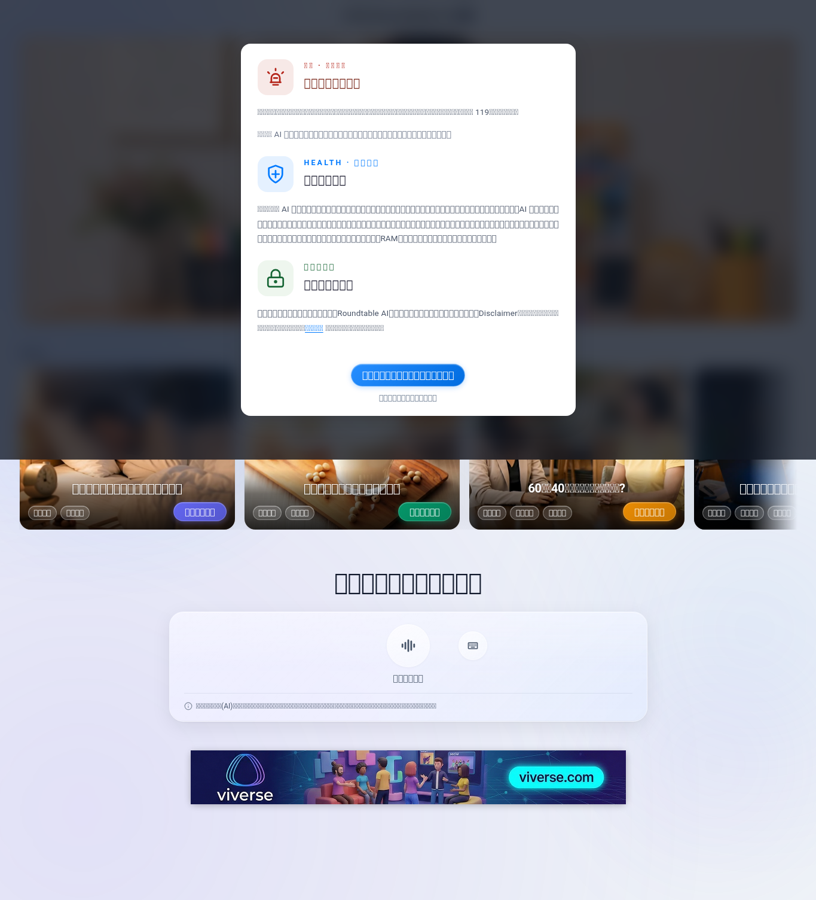
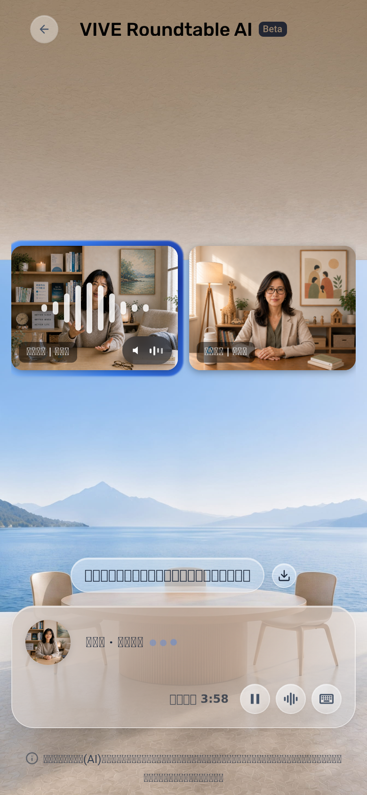
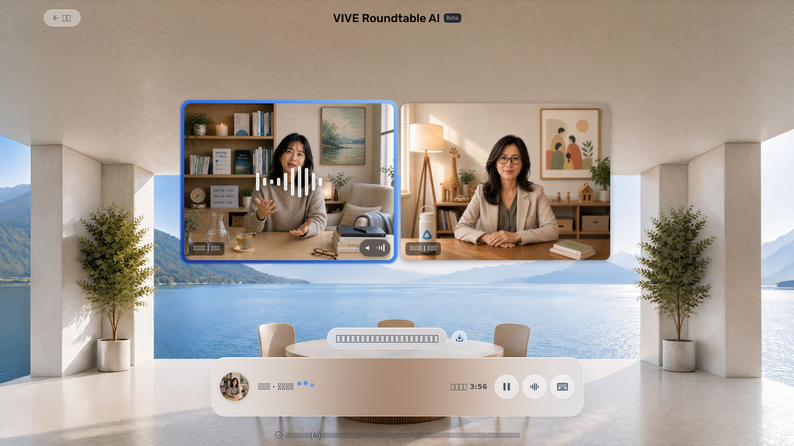

RoundTable V3 Review Report
Target: https://doppel-health.zeabur.app/group · Run evidence: 2026-06-08 05:24-05:26 UTC · Report status: Review Draft, not lockdown.
3
Product PASS from current evidence0
Product FAIL found in this limited run11
V3 items NOT TESTED2
V3 items INCONCLUSIVEWhat I Missed
| V3 rule | What I sent before | Gap | Correction in this report |
|---|---|---|---|
| Separate Product Result from QA Execution Status. | Single PASS_WITH_WARNINGS health verdict. | It hid that most user QA criteria were not executed. | Each F-item now has Product Result and QA Execution separately. |
| Functional Matrix must include What It Tests, Pass Criteria, Verified, Missing, Reason, Evidence. | Only health checks and warnings. | No V3 pass criteria, no non-PASS explanation. | 16-item matrix below follows the V3 structure. |
| Main verdict must prioritize user-observable outcomes. | Mixed browser/network diagnostics with user journey. | HTTP 200 and ERR_ABORTED evidence was overweighted. | Network probe is now appendix/supporting evidence. |
| User-facing timings only: action to visible/usable/audible result. | Included DOM/content/network timings. | Those are technical timings, not V3 UX timings. | Only available user-facing timing is listed; missing timings are marked not tested. |
| Audio/STT must not be inferred from request or play attempt. | No V3 audio/STT rerun. | F-06/F-07/F-09/F-13/F-14 cannot be claimed. | They are NOT TESTED, except chat text-send smoke remains separate from STT. |
| Review draft stays open until Edward says lockdown. | Report sounded ready for review without the V3 caveat. | Could be misread as a complete QA pass. | Report explicitly says not lockdown. |
Functional Matrix
Taxonomy applied: PASS only when V3 pass criteria were directly verified. Unexecuted tests are NOT TESTED. Incomplete evidence is INCONCLUSIVE, not product PASS.
User-Facing Timing Coverage
| Area | V3 definition | Observed 6/8 evidence | Status |
|---|---|---|---|
| Initial page | Begin navigation -> first meaningful page content visible. | Desktop and mobile portal loaded with visible topic cards/disclaimer content. Exact user-visible timestamp was not instrumented; technical portal-settled values were desktop 5.923s. | INCONCLUSIVE |
| Hot topic / chat entry | Click topic -> chat topic and controls visible/usable. | Mobile reached /group/chat; supplemental strict desktop smoke confirmed 加入這場討論 enters chat. | PASS |
| Text interjection | Send click -> relevant expert response visible or audibly verified. | Mobile send button was clicked. Relevant expert response was not verified. | INCONCLUSIVE |
| Custom topic, summary, STT, audio, pause/resume | User action -> visible/usable/audible result. | Not executed in the 6/8 health smoke. | NOT TESTED |
Health Evidence Appendix
| Probe | Concurrency | Result | p50 / p95 / max |
|---|---|---|---|
/group | 1 / 5 / 10 | 16/16 HTTP 200, 0 errors | 1559 / 1559 / 1559 ms; 1448 / 1473 / 1473 ms; 960 / 1210 / 1210 ms |
/api/theme-cards | 1 / 5 / 10 | 16/16 HTTP 200, 0 errors | 844 / 844 / 844 ms; 872 / 1178 / 1178 ms; 872 / 1204 / 1204 ms |
/api/topic-chips | 1 / 5 / 10 | 16/16 HTTP 200, 0 errors | 537 / 537 / 537 ms; 560 / 562 / 562 ms; 556 / 583 / 583 ms |
/api/ad-config | 1 / 5 / 10 | 16/16 HTTP 200, 0 errors | 236 / 236 / 236 ms; 247 / 256 / 256 ms; 258 / 280 / 280 ms |
Evidence Screenshots


